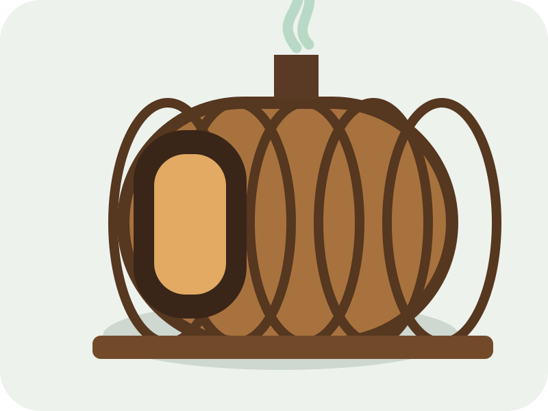

🌲
편백 배럴찜질
은은한 편백 향과 따뜻한 온기 속에서 일상의 긴장을 내려놓습니다.
SIGNATURE
편백 향과 따뜻한 온기, 고요한 숲길과 충분한 휴식이 하나의 경험으로 이어집니다. 청남대 웰니스타운은 단순한 찜질 공간을 넘어 몸과 마음의 균형을 돌보는 체험형 웰니스 공간을 지향합니다.
컨디션과 일정에 맞춰 편안하게 체험할 수 있도록 핵심 프로그램을 구성했습니다.
은은한 편백 향과 따뜻한 온기 속에서 일상의 긴장을 내려놓습니다.
SIGNATURE자연의 소리와 호흡에 집중하며 천천히 걷는 회복 산책입니다.
FOREST WALK짧고 쉬운 호흡 안내로 마음을 안정시키고 현재에 집중합니다.
MINDFULNESS몸을 부드럽게 데우고 배럴찜질을 편안하게 준비합니다.
FOOT BATH산양삼과 자연 원료의 가치를 친근하게 경험하는 건강 프로그램입니다.
WILD GINSENG체험 후 따뜻한 차와 함께 몸의 온도를 천천히 가라앉힙니다.
TEA & REST도착부터 휴식까지 자연스럽게 이어지는 대표 체험 흐름입니다.
체험 안내와 유의사항을 확인합니다.
몸을 데우고 호흡을 가다듬습니다.
편백 향과 온기 속에서 긴장을 내려놓습니다.
수분을 보충하고 천천히 마무리합니다.
실제 사진이 준비되면 시설, 체험, 고객 후기 사진으로 손쉽게 교체할 수 있습니다.
실제 후기가 준비되면 이름과 내용을 교체해 운영할 수 있습니다.
“숲속에서 조용히 쉬고 나니 몸과 마음이 한결 가벼워졌어요.”개인 체험 고객
“편백 향과 따뜻한 온기가 인상적이었고 부모님과 함께 오기 좋았습니다.”가족 체험 고객
“짧은 일정이었지만 깊이 쉬었다는 느낌이 들었습니다.”단체 체험 고객
원활한 체험을 위해 사전 예약을 권장합니다. 당일 가능 여부는 전화로 문의해 주세요.
움직임이 편하고 땀 배출이 쉬운 가벼운 복장을 권장합니다.
연령과 건강 상태에 따라 체험 강도를 조절할 수 있으므로 예약 전 상담해 주세요.
소규모 모임, 기업, 크리에이터 초청 체험 등을 상담해 드립니다.